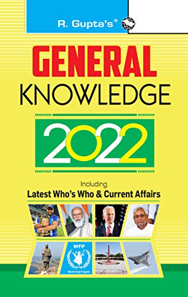

We are going to share the PDF of tow General Knowledge books for Competitive Exams. The google drive download links of R Gupta GK Book and Arihant Publication GK books new edition PDF for 2023 exams are provided in this post for free download. Both the books are very popular among the students preparing for Govt jobs examinations.
The R Gupta GK book Contents following topics :
The Union Council of Ministers Joe Biden : 46th President of the USA Union Budget Padma Awards – 2021 India Australia Test Series Capitals, Governors and Chief Ministers of States Union Territories – Heads & Chief Ministers Officials of Parliament Chiefs of Indian Defense Services Ambassadors and high Commissioners Heads and Prime Ministers of Various Countries Important Cups & Trophies Stadiums & Places Associated with sports Olympic Games (Venues & Dates) Asian Games Commonwealth Games World Cup Football History World Cup Cricket History Some Significant Results Awards / Honours / Prizes National Awards Other National Awards International Awards United Nations Organization Other Important Alliances / Bodies of the World Years Observed by United Nations Organization World Countries/Cities’ Names-Old and New Changes Names of Some Indian cities/ States Name of Parliaments of Some Countries Important Cities, Places, Buildings of the World Highest, Longest, Biggest, Largest, Deepest, Smallest of the world Intelligence Agencies of some Prominent Countries World History Development of Civilization Important Historical Dates of the world The Universe Indian Constitution and Polity Our India Defence Transport Planning in India Atomic Energy and Space Research General Science Science Indian History Abbreviation Books and Authors Computer Awareness
Name : General Knowledge Current Affair
Author : R. Gupta
Edition : 2022- 2023
Medium : English
Number of pages : 114
Name : Arihant GK Book
Author : Manohar Pandey
Edition : 2022
PDF Pages : 162
GK Now Last 6 Months Current Affairs PDF consist One Liner, Questions and Answers and MCQ for Competitive Exams for free download. As we know, most of the exam paper includes current affaires question of recent few months. Union Public Service Commission (UPSC), Staff Selection Commission (SSC) and IBPS Bank are day by day increasing the difficulty level of general awareness and current affairs questions. Therefore, every serious contender for Central or State Government jobs must be fully aware about the recent incidents, specific development in every field in India and world. Last six months PDF are very useful for students preparing for UPSC, SSC, Delhi Police, Bank and any other government jobs examination.
Period : From December 2023 to May 2024
Prepared by : GK Now
Medium : English
Useful for : UPSC, SSC, UPPSC, UPSSSC, NDA, CDS, AFCAT
Number of PDF Pages : 233
period : From December 2023 to May 2024
Prepared by : GK Now
Medium : Hindi
Useful for : UPSC, SSC, UPPSC, UPSSSC
Number of PDF Pages : 295
Period : From November 2023 to April 2024
Prepared by : GK Now
Medium : English
Useful for : UPSC, SSC, UPPSC, UPSSSC, NDA, CDS, AFCAT
Number of PDF Pages : 189